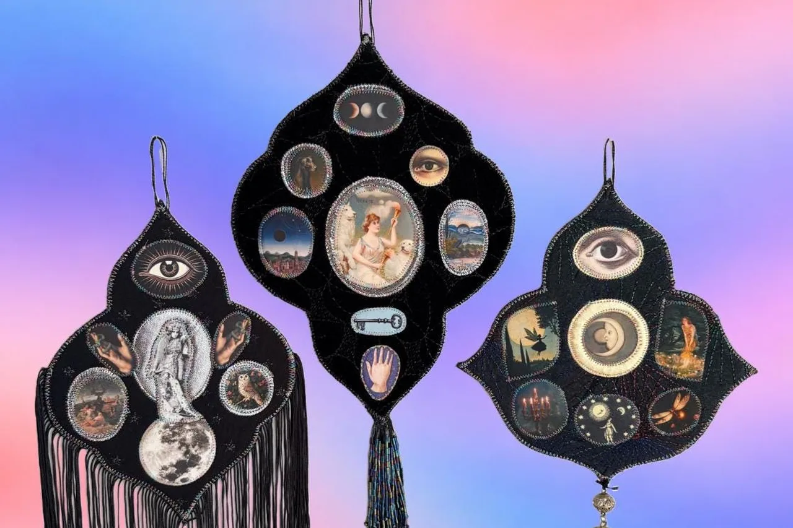
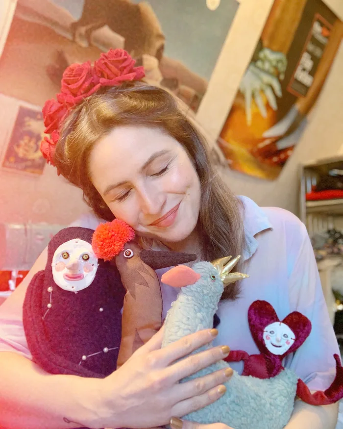
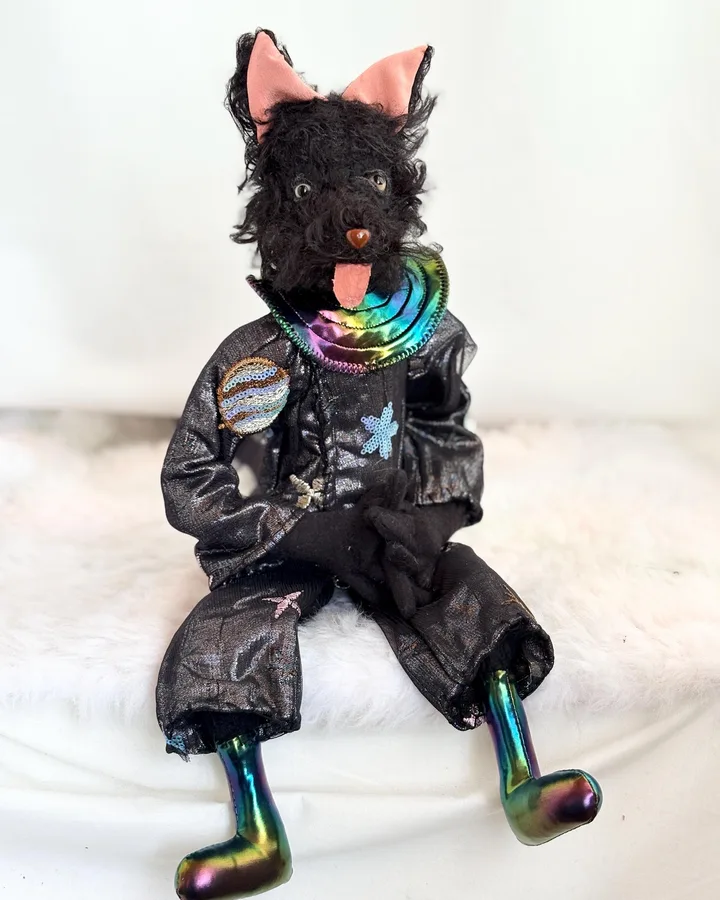
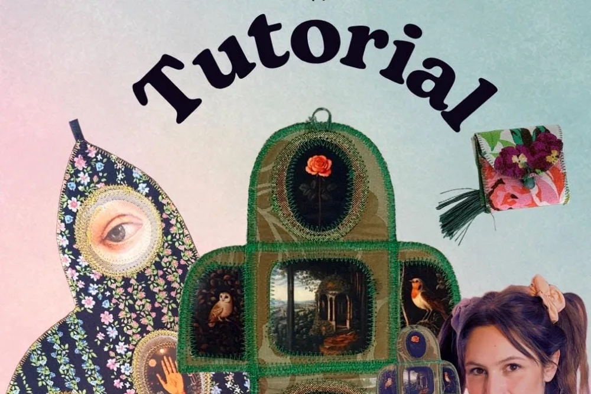
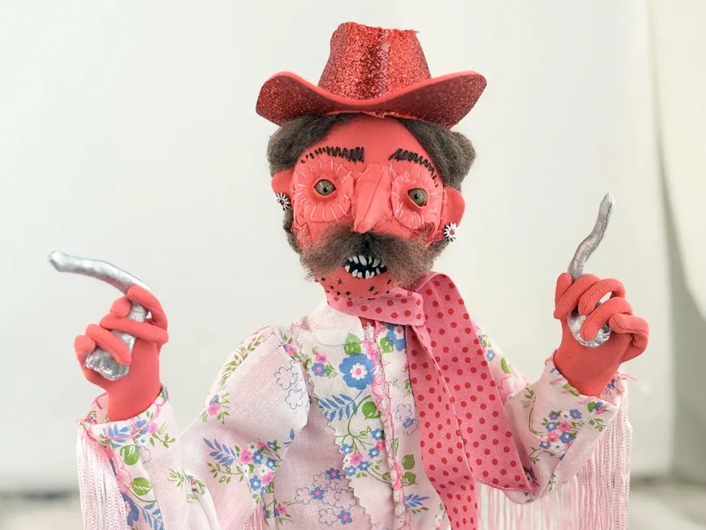
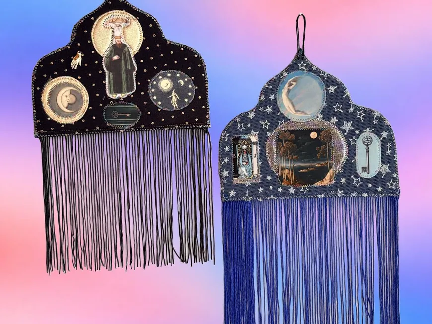
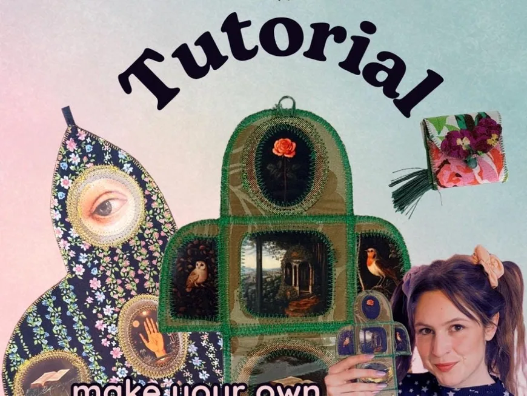

Not toys, but companions
My art dolls are soulful companions, each with its own posture, expression and personality.

Handmade in Vorarlberg, Austria
Unique handmade textile art choose your spirit animal!

Meet the Artist
Owner & artist of Medulla Textiles
I love to sew textile friends since I made my first Lama in 2007. My Mama always had a sewing room in our home, so I kind of grew up beside a sewing machine. Since 2020 I have my own studio and I love it!
Our story

01 How it started
I sewed my first textile animals when I was 17. While I was studying, I started selling my first creations too. I studied in Vienna and lived there in a shared flat with three friends. There was nothing lovelier for me than sitting at the sewing machine in our flat in the evening and letting my creativity run free.
I have always loved using old clothes for my figures. I find they become even more magical when they are made from an old piece of clothing, an old curtain or upholstery fabric.
It is honestly always hard for me to say goodbye to my textile babies, but I know they always go to good hands. People who love and understand my creations are good people, I’m sure of that :-)
— Johanna
02 Where & how it’s made
“Meanwhile I have moved my studio into my grandmother’s old bedroom, and I spend a few hours in there every day. Sometimes I just lie there on the rug next to my dog and enjoy life.”

03 What makes it special
My art dolls are soulful companions, each with its own posture, expression and personality.
My altars and shrines are miniature worlds full of atmosphere and symbolism.
Visible stitches and imperfection are part of each piece: quirky, funny, sometimes grotesque, never polished.
Reviews
What we make
Every piece is one of a kind and handmade by me in Austria. Here’s what you’ll find in the shop.

One-of-a-kind, poseable textile art dolls, each with a name and a small backstory.

Pocket altars, wall altars and talismans: travel companions, talismans or meaningful gifts.

Want to make your own? My Pocket Altar sewing tutorial shows you how.
Everything is sold through the online shop, with secure checkout and buyer protection.
Stay in the loop
Sign up to be the first to know about sales and new products.
You’re in! 🎉
Continue to the shopEvery piece is unique and created with care, character and a touch of soul. Thanks for supporting a small handmade studio.
Visit the shop